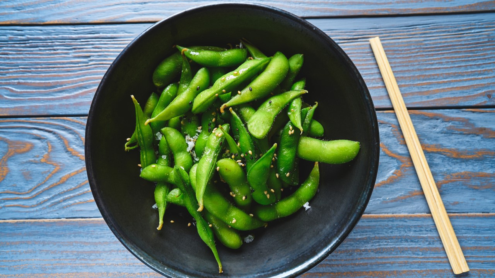
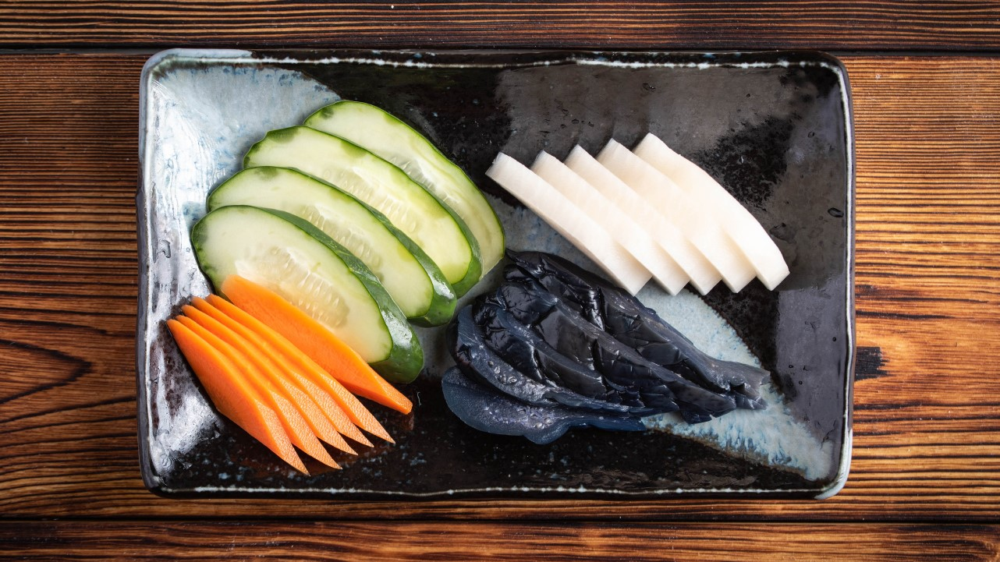

De bekendste vorm van Japans eten is natuurlijk sushi, het kleine rijstrolletje van enkele centimeters groot.
Sushi in Japan is een ware vorm van kunst en vele Japanners besteden er hun hele leven aan om deze vorm van Japans eten te perfectioneren!
Sushi is een vorm van Japans eten die altijd bereid wordt met bruine of witte rijst en meestal met rauw eten uit de zee zoals vis of zeevruchten.
Soms worden sushi's ook gemaakt met vlees maar meestal wordt het geserveerd in een combinatie met sashimi (rauw vlees/vis).

Ramen is waarschijnlijk het meeste gegeten Japanse gerecht, een soort noodles.
Het gerecht wat hierbij hoort is vaak relatief simpel, een stukje vlees- of visbouillon samen met de ramen gegarneerd met lente-uitjes of andere gekookte groente.
Ramen zijn populair tijdens lunch en avondeten.

Takoyaki zijn kleine deegballets gevult met stukjes octopus (tako).
Ze worden in een soort tosti-ijzer gebakken en je kan ze bijna overal kopen.
Erg lekkere snack voor een korte stop.
Je vindt ze ook overal bij straatverkopers in de grote steden.
Zoals hierboven in de foto te zien is op de bekende Dōtonbori in Osaka.

Merkwaardig genoeg is mochi ijs nog niet echt doorgedrongen hier in Nederland of België want het is echt smaaksensatie!
Mochi ijs is Japanse kleefrijst om een bolletje ijs gerold. Perfect op warme zomerse dagen en lekker plakkerig! Het ijs komt in alle kleuren, geuren en maten.
Erg leuk voor een kinderfeestje of als desert.

Gestoomde sojabonen die nog in hun peulenschil zitten dat zijn edamame.
Het is niet de bedoeling om de schil op te eten maar kan wel alleen is een beetje taai.
De peulen zijn eigenlijk namelijk nog onrijp in deze vorm.

Tsukemono zijn augurken, groenten en pruimen in verschillende soorten en smaken maar vooral ingelegd(gepekeld).
Ze worden vaak als bijgerecht bij het ontbijt gegeten.